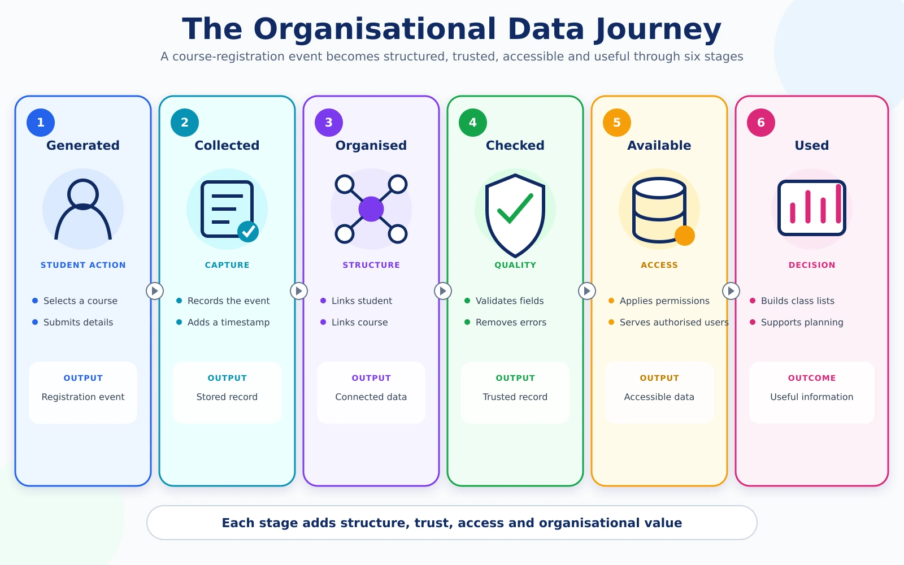

From an event to useful information
This overview explains the journey without introducing technical architectures or implementation tools.

Six general stages
Generated
An activity or event creates information.
Collected
The information is recorded by an organisation or digital service.
Organised
Related records are arranged so they can be managed.
Checked and prepared
Problems that reduce trust or usability are identified.
Made available
Authorised people or applications can obtain the information.
Used
The data supports a service, report, decision or other organisational need.
Example: course registration
A student selects a course. The registration is recorded and connected to the student and course information. The university checks the record and makes appropriate information available to students, lecturers and administrators. Each user sees the information needed for a different purpose.